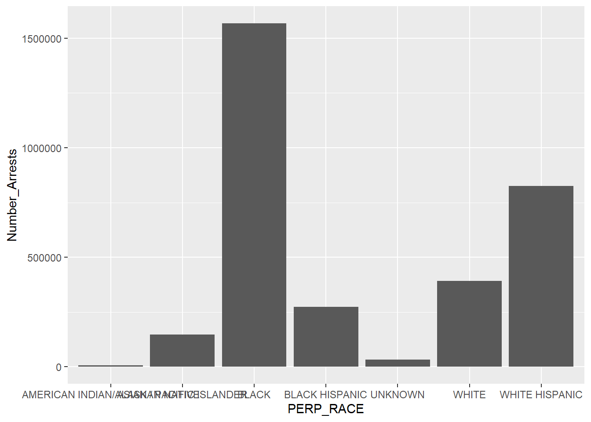
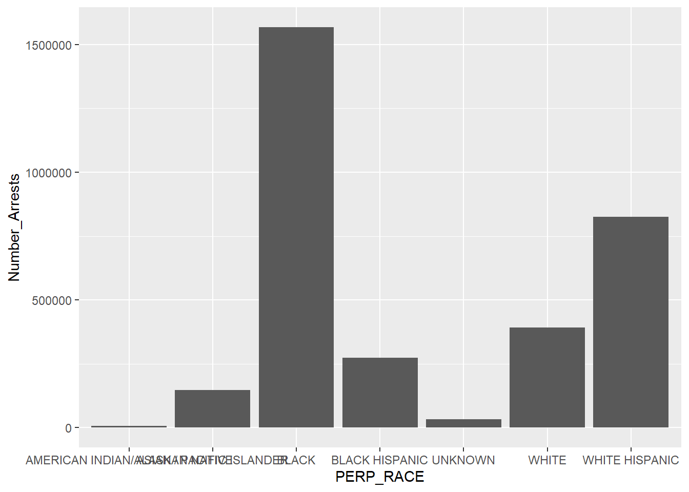

Chapter 4 Missing values
4.1 Composing our Visualization for Missing Data
We start by introducing a function that will visualize missing values in our dataset. The code to do this can be seen below:
4.2 Importing the Arrests Dataset
We are now ready to look out our dataset. First, we import the data from its source:
4.3 Visualizing the Missing Values
Our last step will be to look at our dataset for missing values.
 

As we can see from the percentage visualization, there are only a small number of rows missing one of two columns: KY_CD (Key code), which is a generalized classification code, and PD_CD (Police Department code), which is a more granular code.